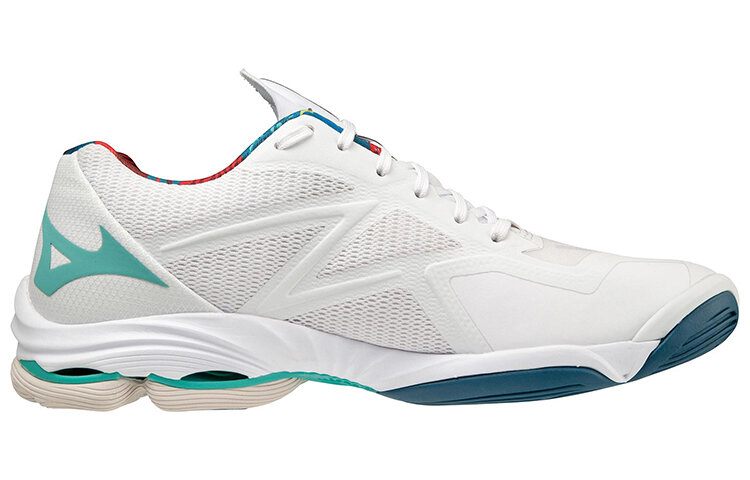

Скоростные волейбольные кроссовки для атакующих игроков, обеспечивающие максимальную маневренность и отличное сцепление с покрытием. Технология Wave Plate гарантирует стабильность и амортизацию при резких стартах и прыжках, а дышащий верх сохраняет свежесть ног на протяжении всей игры.
Mizuno Wave Lightning Z — это результат многолетних исследований и разработок японского бренда Mizuno, созданный специально для волейболистов высокого уровня. Модель получила свое название благодаря скорости и точности, которые она дарит игроку на площадке. Уникальная технология Wave Plate, расположенная в средней части подошвы, обеспечивает идеальный баланс между амортизацией и стабильностью, позволяя совершать молниеносные рывки и высокие прыжки без потери контроля. Материал верха Dynamotion Fit адаптируется к движению стопы, исключая точки давления и обеспечивая идеальную посадку. Подошва XG (Extra Grip) гарантирует надежное сцепление с покрытием даже при самых резких изменениях направления. Легкий вес в 295 грамм позволяет сохранять скорость на протяжении всего матча, а система Smooth Ride обеспечивает плавный перекат стопы при ходьбе и беге. Идеальный выбор для связующих и доигровщиков, ценящих скорость, маневренность и надежность.